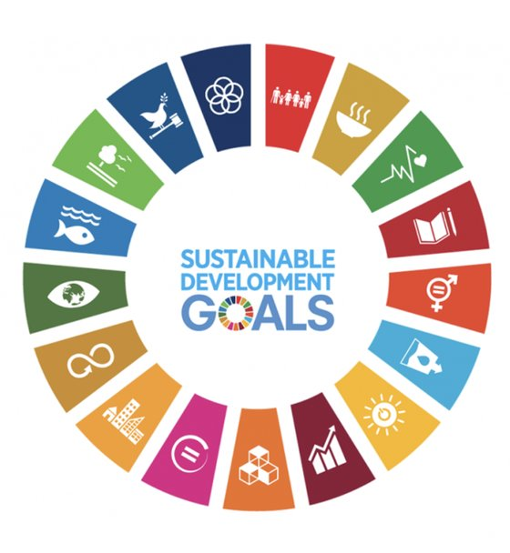

Global justice
Every person should be free from oppression, able to learn, to live in safety and to provide for the people they love. These are the issues we help communities understand, and the places where ordinary people can make a difference.
Our core focus
Modern slavery is the buying, selling and controlling of people through force, fear and coercion, treating human beings as commodities for profit. It happens in every region of the world, including here in Wales.
50m
people in modern slavery worldwide, 1 in every 150 people.
28m
in forced labour. 86% of cases are in the private sector.
22m
people living in forced marriage, 6.6 million more than in 2016.
10m
more people in modern slavery in 2021 than five years earlier.
$236bn
in illegal profits from forced labour each year, up 37% since 2014.
73%
of those profits come from forced sexual exploitation.
23,411 potential victims were referred to the Home Office in 2025, a 22% rise on 2024 and the highest number since the National Referral Mechanism began in 2009.
UK nationals were the most referred nationality, at 22%. Modern slavery is not only something that happens to people from overseas. It happens in our own towns.
The UN Palermo Protocol (2000) defines trafficking in three parts.
Sources: ILO, Walk Free and IOM, Global Estimates of Modern Slavery (2022, data for 2021). ILO, Profits and Poverty: The Economics of Forced Labour (2024). Home Office, NRM statistics end of year summary 2025 (February 2026).
There is rarely one clear sign. Look for a pattern, and if something feels wrong, report it. You don't need to be certain.
Signs of physical or psychological abuse, looking malnourished or unkempt, wearing the same clothes.
Rarely alone, someone else speaks for them, unfamiliar with the area or unsure of their address.
Many people at one address, poor or overcrowded housing, living at their place of work.
No passport or ID of their own, few possessions, no control over their wages.
Dropped off and collected at odd hours, unable to come and go, working very long hours.
Reluctant to seek help, fearful of police or authorities, or of someone they owe money to.
Exploitation grows where poverty, conflict and inequality leave people with few choices. That's why our education covers the whole picture.
Everyone should be able to work and provide for their loved ones. We look at decent work, fair pay and debt, and at how poverty makes people vulnerable to false job offers.
Linked to UN Sustainable Development Goals 1 (No Poverty) and 8 (Decent Work).
Why people leave their homes, the dangers they face on the journey, and how churches and communities can offer a real welcome.
Linked to SDGs 10 (Reduced Inequalities) and 16 (Peace and Justice).
Millions of girls are denied an education because of their gender. We explore forced marriage, child labour and child soldiers, and every child's right to safety and learning.
Linked to SDGs 4 (Quality Education) and 5 (Gender Equality).
Since 1999, Renewing Our Minds has brought young people from different ethnic, cultural and religious backgrounds together across the former Yugoslavia. We share what it teaches about healing divided communities.
Linked to SDG 16 (Peace, Justice and Strong Institutions).
People are forced to mine minerals, tap rubber, harvest food and make clothes for the wealthier parts of the world. We help households, churches and businesses ask better questions about what they buy.
Linked to SDG 12 (Responsible Consumption).

The UN's promise: SDG target 8.7
Countries pledged to end forced labour, modern slavery and human trafficking, and to end child labour in all its forms by 2025.
That deadline has now passed, and the numbers have gone up, not down. The work is more urgent than ever.